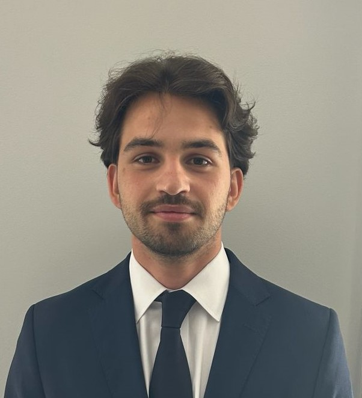
My background is a mix of biomedical and mechanical engineering. I took my bachelor's at the University of Glasgow in biomedical engineering, with an emphasis on tissue engineering, and then chose to pursue a master's at Cranfield University in mechanical engineering. That decision came from wanting to sharpen my simulation skills at an institution known for its rigour and its links to industry. I am finishing that degree now on a thesis project sponsored by Siemens, looking at Type II hot corrosion of turbine blade alloys, aimed specifically at supercritical CO2 turbines.
By this point I have worked across a broad range of engineering topics and projects, and I have found that I gravitate towards the ones that make a real, measurable difference to people. I have built up experience in a wide range of simulation software, and I have spent a lot of hours in the lab, which is where I realised how much I enjoy the moment a project moves beyond the desk and the screen.
The projects in this portfolio are some of the work I am most proud of, covering both medical devices and energy systems. I do not see myself as limited to those two areas. What I want this work to show is that I can pick up new methods quickly and shape my engineering to whatever a project actually needs. I am based in Milton Keynes in the UK for now, and I am open to international opportunities. Having lived in Greece, Germany, Qatar and Cyprus, I am comfortable relocating if a role calls for it.
What. This was the validation of a biodegradable piezoelectric scaffold that mimics the architecture of skeletal muscle. The intended use is in patients who have lost more than 20% of a muscle's volume, a condition the body cannot repair on its own, where the scaffold is implanted to guide the muscle as it regrows so that it recovers both its original geometry and its mechanical behaviour. The scaffold is made from PHBV, a polymer that generates a small electrical charge when it is mechanically deformed, which recreates the electromechanical environment muscle cells actually grow in.
How. My work ran the full length of the validation. I manufactured the fibres from the electrospinning protocol, then designed a rolling protocol that arranged those fibres into the aligned, bundled architecture that mimics real muscle. I characterised their mechanical properties in both dry and wet conditions, which meant designing and building the test rig from scratch, since we had no way of testing the fibres submerged before that. I then carried out all of the biocompatibility work, and assessed whether the seeded cells were genuinely turning into muscle by staining for myosin, the protein that marks myogenic differentiation.
Why. The work validated the concept, with clear myosin expression appearing within 5 days, which shows the cells were differentiating into muscle on the scaffold rather than simply surviving on it. Reaching that result depended on the wet-condition rig, because dry mechanical data alone would not represent how the scaffold behaves once implanted. The findings fed into a paper now available as a preprint on BioRxiv and under review at Small.
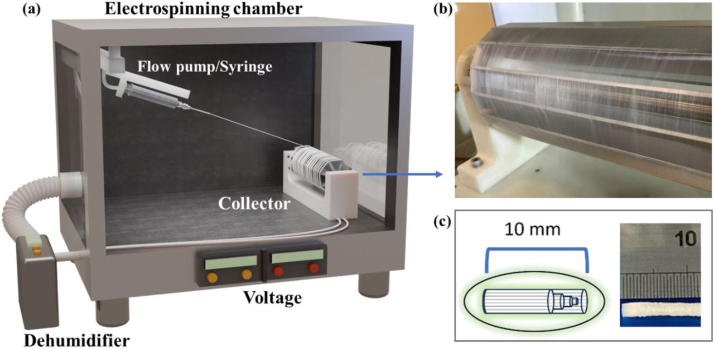
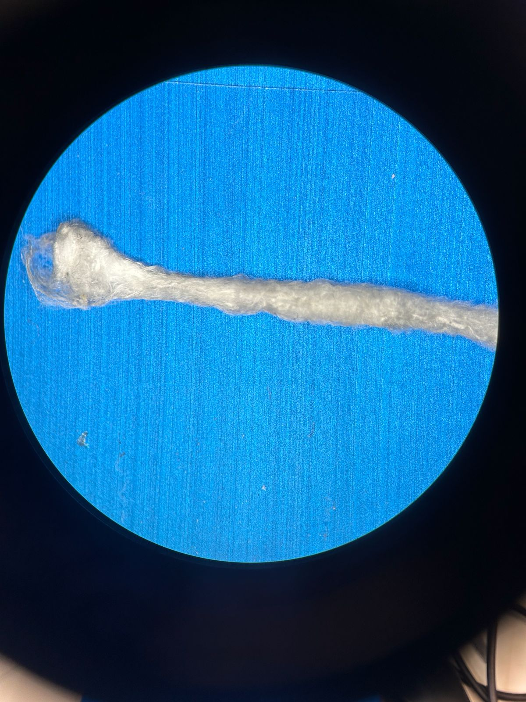
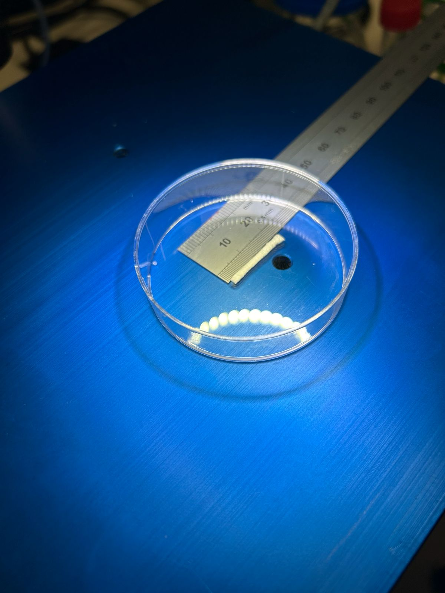
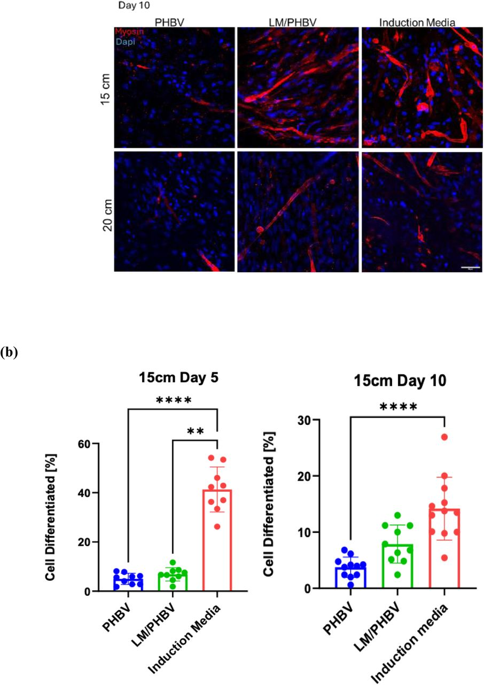
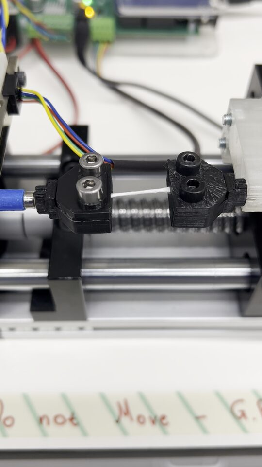
►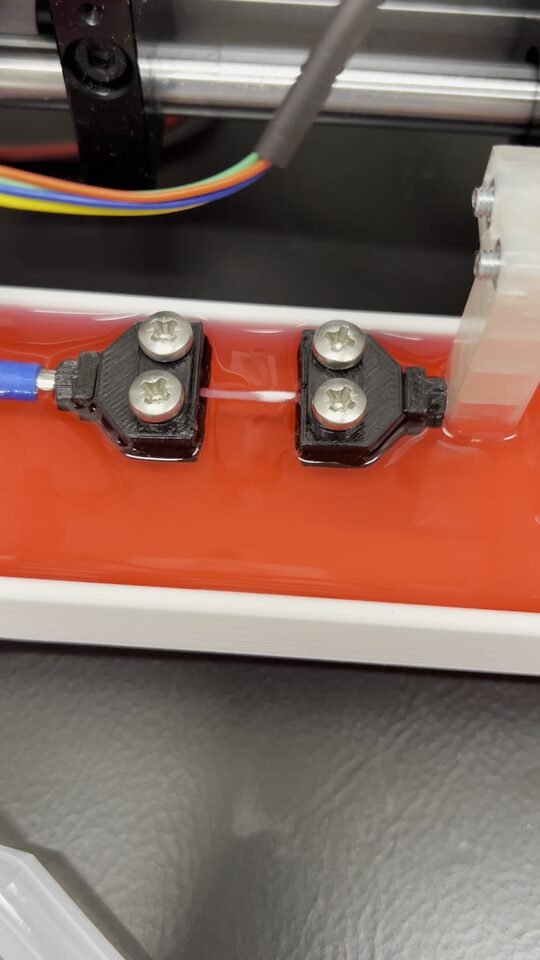
►Click any figure to enlarge. The last two are short clips of the rig and play on click.
What. I designed a coronary stent in CAD and built a computational platform to test how it behaves mechanically when a balloon inflates it inside an artery, reproducing what actually happens during implantation. The aim was to evaluate the design for stress and recoil before any of it reached manufacture. Stent geometry is the dominant factor in how a stent performs once deployed, hence being able to predict that behaviour early is what decides whether a design is viable.
How. The geometry started as a parametric model in Fusion 360, which I then imported into Abaqus for nonlinear structural analysis with plasticity. The stent was modelled in cobalt-chromium, chosen for its durability, biocompatibility and radiopacity. To keep the computation tractable I assumed frictionless contact at the balloon interface, which lowered the cost without distorting the stresses I was interested in. Radial expansion was evaluated in discrete stages, with the 75% state taken as the reference condition, and a second step captured the elastic springback once the load was removed, in order to characterise the recoil the stent undergoes after deployment. The mesh was iterated to balance accuracy against computational time, working within the 250,000-node ceiling of the student version of Abaqus.
Why. The platform converged to a mesh-independent solution within 5% error, which gives confidence that the stress results are driven by the physics rather than the mesh. The von Mises distributions showed the stent undergoing almost fully plastic deformation during expansion, and the springback step quantified how much of that deformation recovers once the balloon is withdrawn. Together these characterise the in-service behaviour of the design and show that the platform can screen stent geometries before manufacture, which is where most of the cost and risk in this kind of work sits.
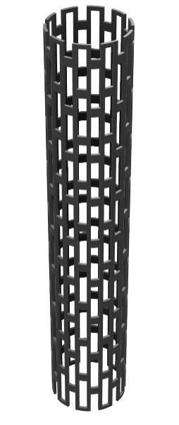
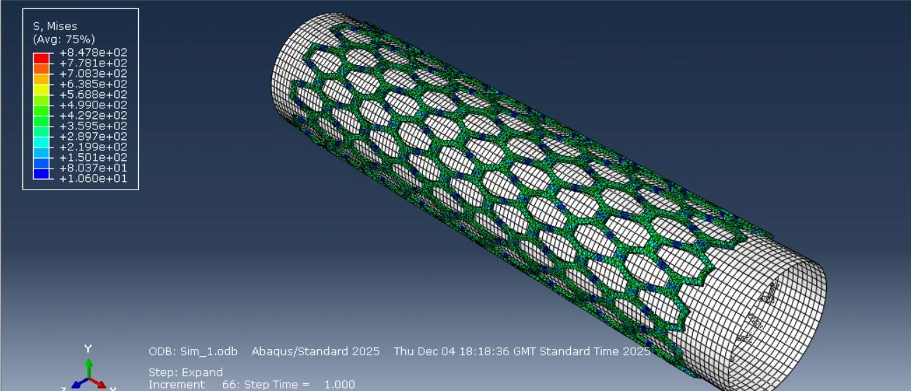
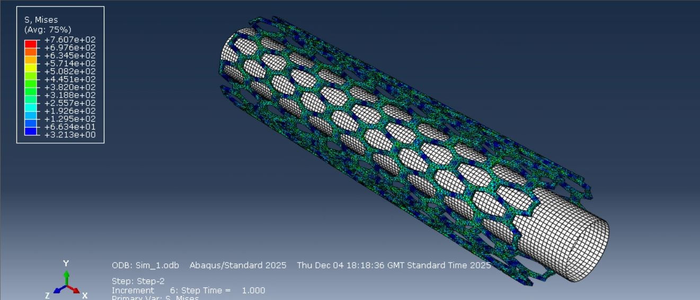
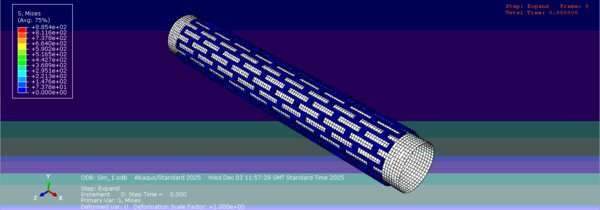
►Click any figure to enlarge. The last one is the expansion simulation and plays on click.
What. This was a 2D CFD study of a NACA 4412 aerofoil aimed at vertical-axis wind turbine blades, which is a setting defined by low, gusty, urban wind. I first quantified the lift and drag of the baseline section, then tested a passive modification, a Gurney flap, to see whether it could improve the aerodynamic profile. The point of interest is that the flap raises lift but also raises drag, so the real question is one of optimisation rather than a simple improvement, since on a turbine any excess drag is power you never generate.
How. The geometry and a structured C-shape mesh were built in Ansys ICEM, with the domain extended to 20 chord lengths and the leading-edge blocks converted to splines to keep the cells orthogonal where the curvature is sharpest. Cell heights at the wall were sized to a target y+ of 1 so the viscous sublayer was properly resolved, and mesh quality was checked against accepted angle and determinant limits. The flow was solved in Fluent using the k-omega SST turbulence model, run at a fixed 10 degree angle of attack for freestream speeds of 3 and 15 m/s. To trust the numbers I ran a full mesh-independence study, scaling element count by root 2 at each step and settling on a 78,000-element mesh, then confirmed convergence with a grid convergence index.
Why. The solution was effectively mesh-independent, with a grid convergence index of 0.037% on the lift coefficient, so the comparison rests on the physics rather than on mesh artefacts. The Gurney flap raised the lift coefficient by up to roughly 79%, but it raised drag by an even larger margin, up to roughly 96%, by thickening the wake at the trailing edge. The useful conclusion is therefore not that the flap works, but that its length has to be tuned to find the point where the lift gain still outweighs the drag penalty, which is exactly the balance that decides net torque and power on a real turbine.
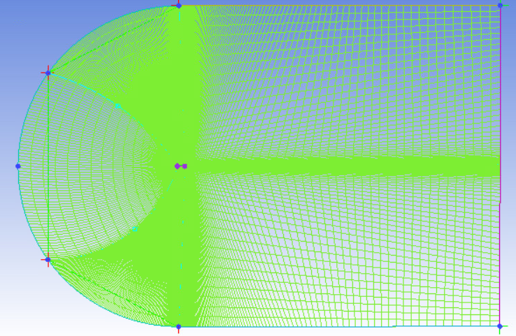
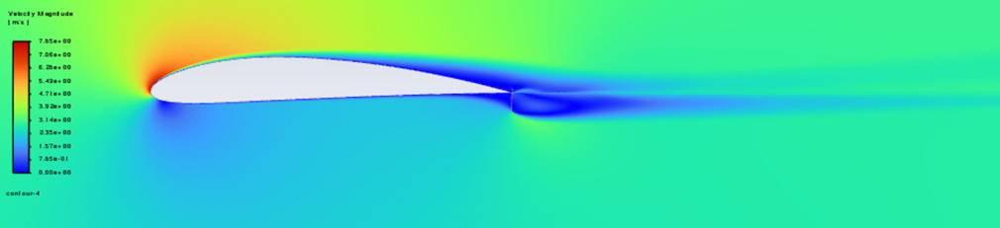
Click any figure to enlarge.
What. The wider project asked whether resonant wireless power transfer could feed the rotor excitation of a direct-drive wind turbine generator, which would let the machine drop its rare-earth permanent magnets and the slip rings that normally wear out. My part was the generator itself. I had to show that an electrically excited 2 MW direct-drive machine, re-designed to replace the permanent magnets with wound rotor excitation, could actually reach its rated performance, since the whole feasibility case falls apart if the re-designed generator does not perform.
How. I contributed to the analytical re-design, sizing the machine through a magnetic equivalent circuit and reluctance network so that the rotor excitation reproduced the field a permanent-magnet machine would have given. I then built and ran all of the electromagnetic finite-element simulations in Ansys, using RMxprt for the initial geometry and performance sweep and a 2D transient Maxwell model for the detailed field solution. The transient model captured what the analytical work could not, the saturation in the stator teeth, the flux leakage and the start-up behaviour of the phase currents, which is why it was needed as the check on the design.
Why. The Maxwell results validated the re-design against hard numbers. The machine reached a peak output of roughly 2.5 MW near a torque angle of 100 degrees, held an electromagnetic efficiency of about 92.7% across a wide range of operating angles, and produced a three-phase back-EMF and an electromagnetic torque that agreed with the analytical predictions rather than contradicting them. Taken together these confirm that the electrically excited machine can reach its rated 2 MW point at an efficiency competitive with the permanent-magnet design it replaces, which is the result the rest of the feasibility study rested on.
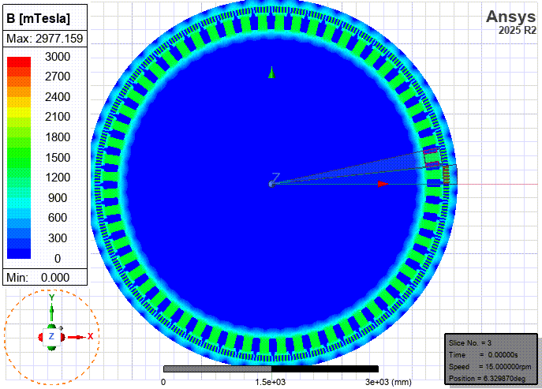
►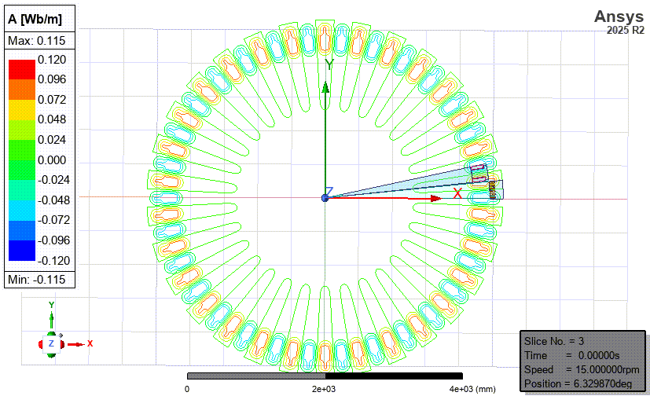
►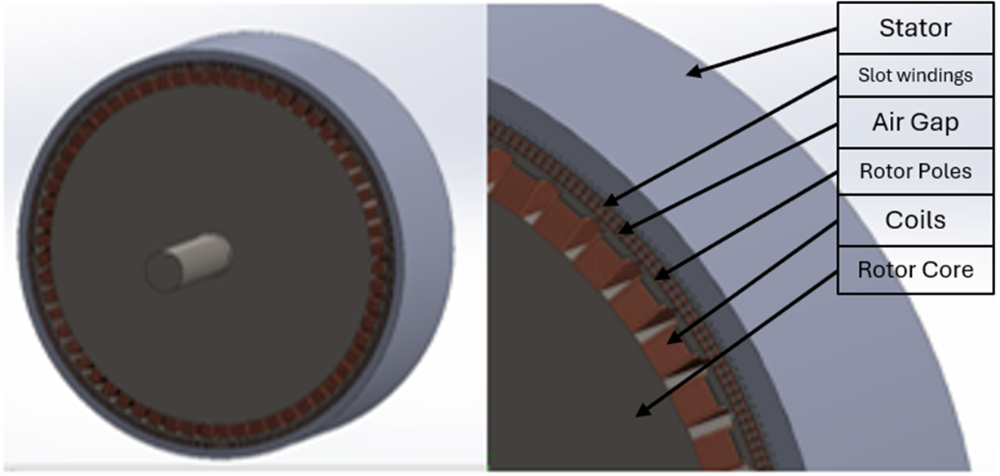
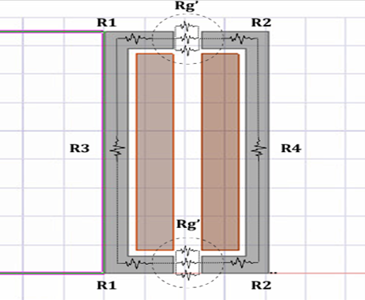
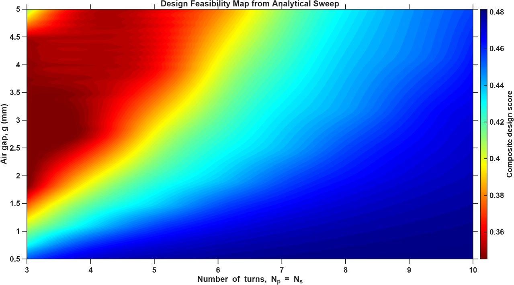
Click any figure to enlarge. The first two are field animations and play on click.
What. I modelled how a drug diffuses out of a spherical carrier into the surrounding tissue, the core problem behind any controlled-release implant or particle. The carrier is a monolithic sphere loaded with drug and wrapped in a thin film, and the question I was after is how quickly the drug leaves and how the release rate depends on the design, since that release profile is what determines the dose a patient actually receives over time.
How. I built the sphere in COMSOL and used the Transport of Diluted Species physics to model the drug as a diffusing species, with a perfect-sink boundary representing tissue that carries the drug away as fast as it arrives. I ran it as a time-dependent study out to one hour and tracked the concentration field and the cumulative release. The geometry is symmetric, so the release is uniform in every direction, which let me use the 1D line profiles as a quick consistency check against the full 3D field before trusting the result.
Why. The release profile showed a non-physical offset at the start, reading about 0.19 at time zero when it should have been zero. Rather than ignore it I traced it to the mesh, since a coarse mesh approximates the sphere with a faceted surface that misrepresents the boundary. I then refined the mesh in steps and watched the offset shrink, and at an extremely fine mesh the start-point error dropped below 5%, which confirmed the cause was numerical rather than physical. The useful outcome was less the release curve itself than the habit of not accepting a clean-looking result until I understood where its error came from.
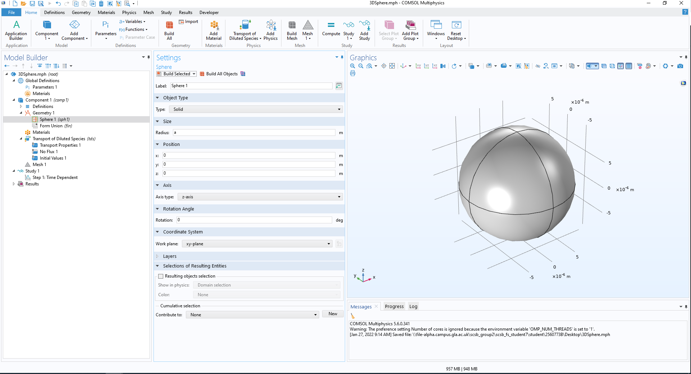
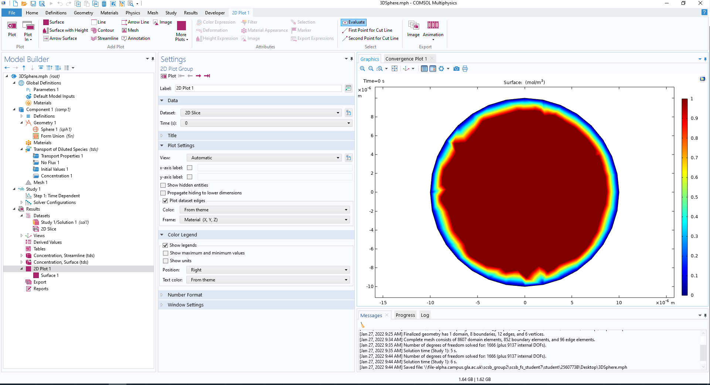
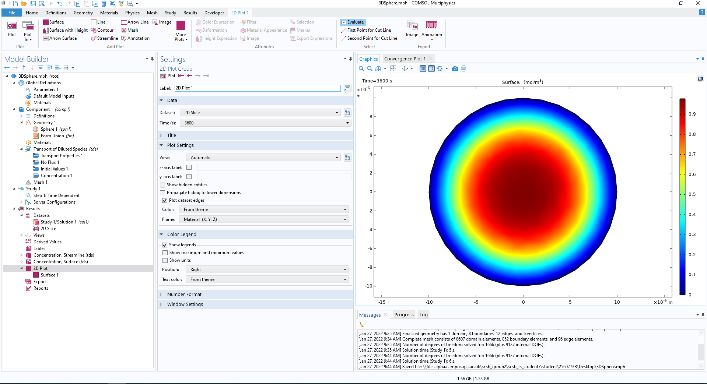
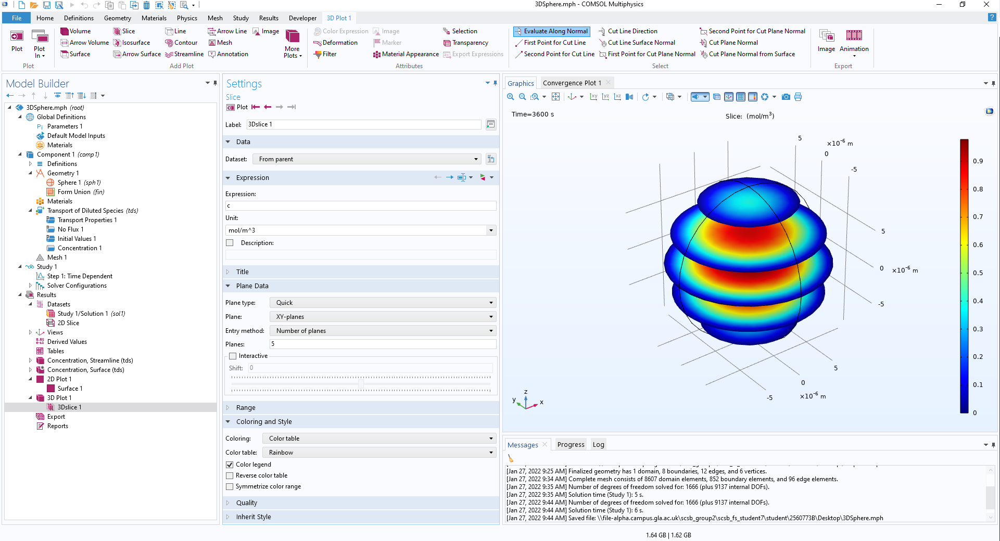
Click any figure to enlarge.
What. I designed a paper microfluidic sensor to detect creatinine in blood, a marker that rises when the liver and kidneys stop clearing waste properly. The whole device works by colour, the sample, buffer, enzyme and stain wick through paper channels, mix, and react to produce a reading. The hard part is timing, because the stain has to meet the reacted sample inside a narrow window, so the real design problem is shaping the channels so the right things mix at the right moment.
How. I used MOFEM to simulate the capillary flow through the paper, building the channel geometries in Gmsh and running the transient flow in Python so I could watch the fluid front advance and see exactly when each reagent reached the mixing zone. I started from simple shapes to understand isotropic against anisotropic spreading, then designed my own multi-chamber layouts and iterated them, reading the mixing and staining times straight off each simulation and reshaping the channels in response. I then built the designs as physical paper prototypes and tested them, capturing the colour change with a phone camera to compare against what the simulation predicted.
Why. Simulating the flow first meant I could tune the timing before building anything, and the iterations showed it clearly, the first design mixed the stain far too early at around 68 seconds, the second overcorrected to 240 seconds, and the third landed at roughly 152 seconds as the channels closed in on the target. The experiments backed the key trend, with narrower channels giving faster flow as predicted. The lesson I took from it was a design one, that every bit of geometric complexity added to the device made the flow harder to predict, so the timing has to be earned through iteration rather than assumed.
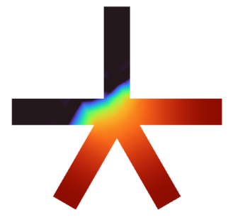
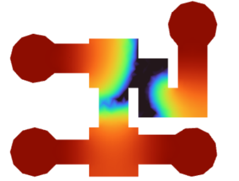
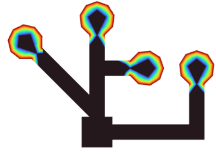
Click any figure to enlarge.
Bed Tower, a smart bedside power tower
A bedside unit that integrates a gooseneck reading lamp, a UK mains socket, USB ports and a wireless charging pad into one piece of furniture. Designed for the Component Design module using the Double Diamond framework, taken from concept through CAD, a physical prototype and a cost study. Group project.
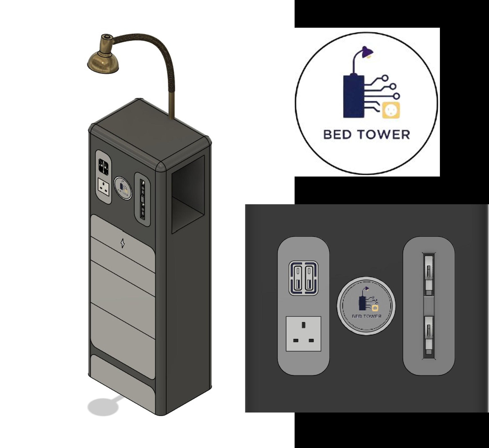
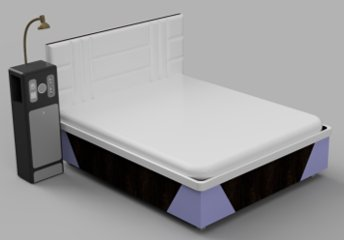
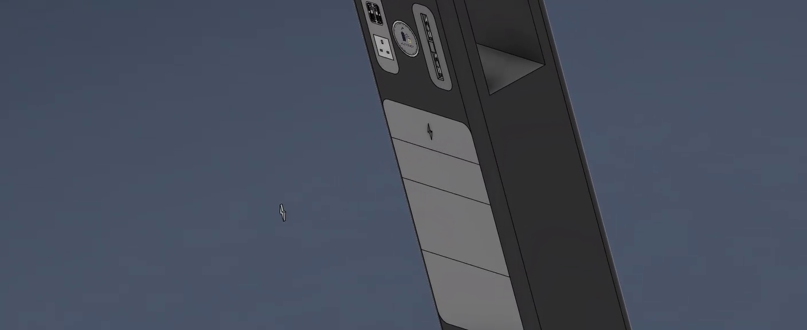
►BMX bicycle
Modelled and rendered a full BMX bicycle as a complete assembly, frame, drivetrain, wheels and controls, demonstrating parametric assembly modelling and photorealistic rendering.
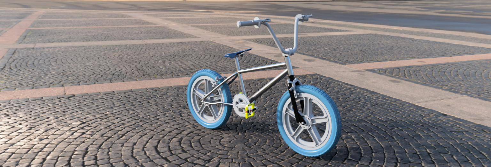
Prosthetic leg
Modelled and rendered a prosthetic leg with a contoured socket and sprint-blade foot, applying the same CAD and rendering workflow to a biomedical product.
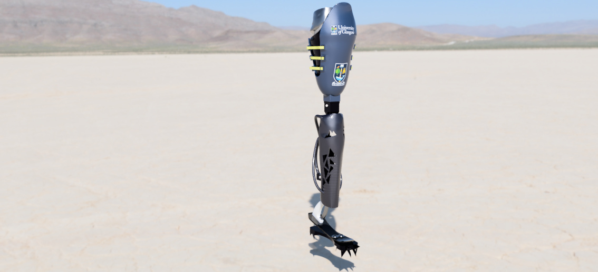
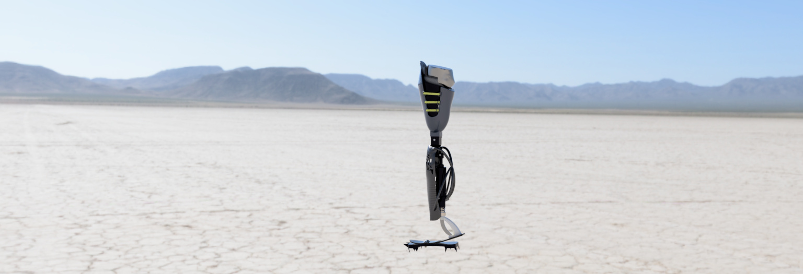
Click any figure to enlarge. The Bed Tower turntable plays on click.
Several separate Python projects across machine learning, computer vision, signal processing and data visualisation.
AI Forecasting for Energy Demand
MSc, Artificial Intelligence for Sustainability, Cranfield University, 2025
I built a model to forecast UK electricity demand at thirty-minute resolution. After cleaning the raw series, handling outages, a long flat period and spikes through indicator features and sample weighting, and engineering time, calendar and lagged features, I combined a CNN-LSTM network with a gradient-boosting model into an ensemble weighted by validation error, with the hyperparameters tuned by Bayesian optimisation. The CNN-LSTM captured the short-term shape while gradient boosting stayed steadier over longer horizons. I also ran a PRISMA literature review of forecasting models for renewable energy as the background to the work.
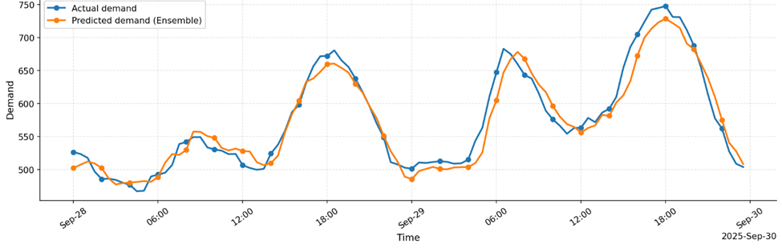
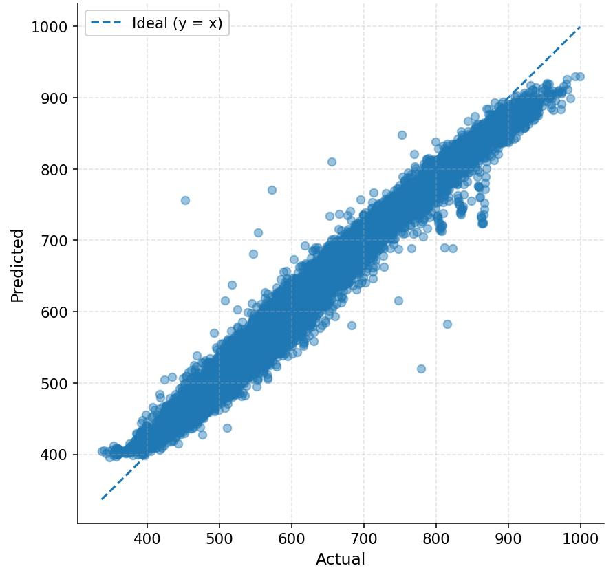
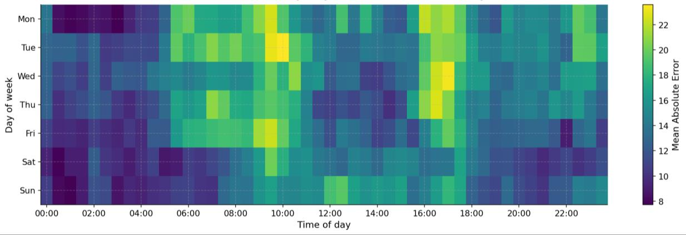
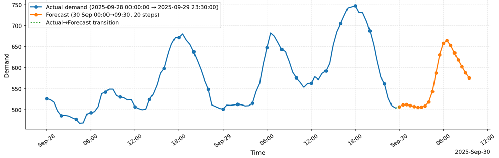
CIFAR-10 Image Classification
Deep learning coursework, TensorFlow / Keras
I built and compared three approaches to classifying the CIFAR-10 image set: a fully-connected network, a convolutional network, and a network trained on PCA-reduced inputs. The convolutional model was the clear winner at about 77%, against roughly 52% for the dense network and 55% for the PCA version, which shows how much convolution helps when the spatial structure of an image matters.
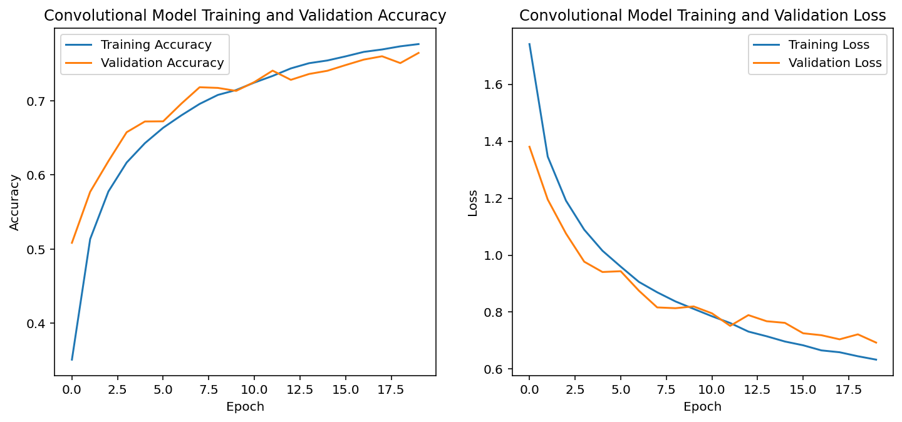
Image Processing and Object Counting
Image analysis coursework, scikit-image, SciPy, NumPy
Two pieces of computer-vision work. The first separates an image into its colour channels, downsamples it and plots intensity histograms to understand its make-up. The second is a segmentation pipeline that thresholds an image, cleans the masks with morphological opening and closing, labels the connected regions and counts the objects along with their centroids.
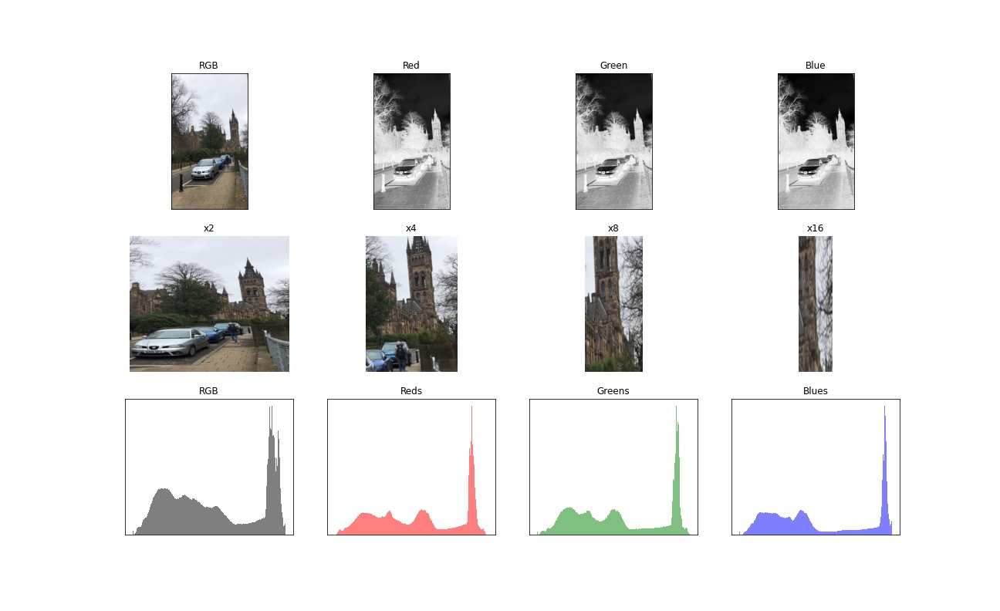
Signal Processing of Biosignatures
Signal Processing of Biosignatures, University of Glasgow
Frequency-domain analysis and filter design in Python. I used the discrete Fourier transform to recover known tones buried in noise, then designed and compared FIR and IIR filters, across Hamming and Hann windows and Butterworth and Chebyshev designs, for low, high and band-pass cases.
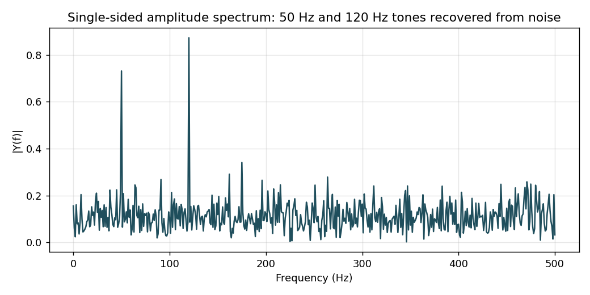
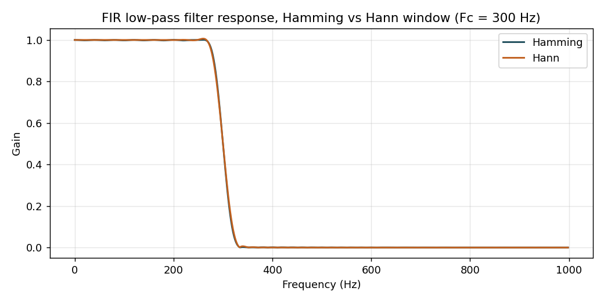
Healthcare Expenditure Data Visualisation
BEng Biomedical Engineering, University of Glasgow
A set of figures analysing UK healthcare spending. A broken-axis line chart shows the public against private share from 1997 to 2013, where the two move as mirror images and public spending rises after the 2008 recession. A grouped bar chart shows the same split in absolute terms, and a pie chart breaks down the 2013 household spend by service type.
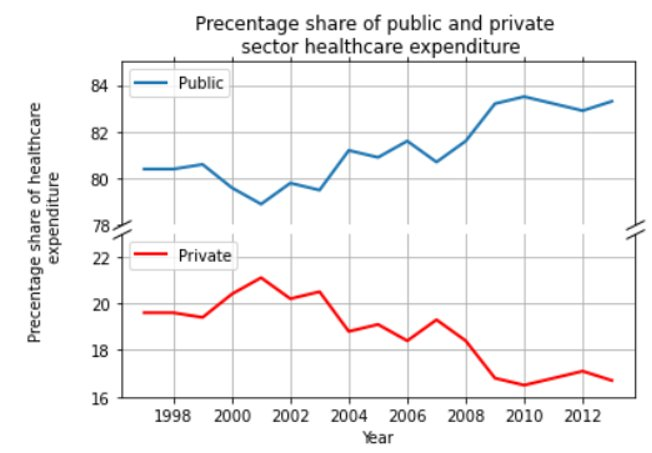
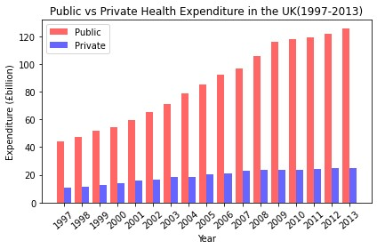
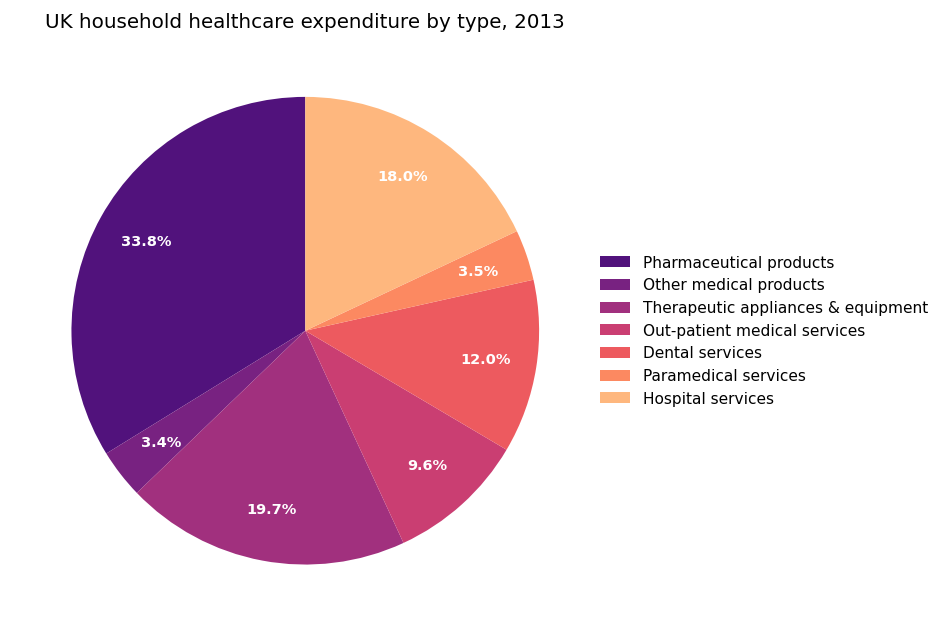
Click any figure to enlarge.